This document provides the theoretical background underlying oomph-lib's free surface, interface and surface transport capabilities. We begin with a review of the relevant theory to establish the overall framework and notation, and then discuss the implementation of the methodology in oomph-lib.
Here is an overview of the structure of this document:
If you don't need all the gory details, you may prefer to start by exploring the free-surface flow tutorials in oomph-lib's list of example driver codes.
Theory
A complete theoretical treatment of moving surfaces in space requires the use of differential geometry, described in detail by Aris (1962) Vectors, Tensors and the Basic Equations of Fluid Mechanics , Wetherburn (1955) Differential Geometry of Three Dimensions, Volume I and Green & Zerna (1968) Theoretical Elasticity among others. Here, we shall present only the essential information and the reader is referred to these texts to fill in additional background.
Geometry of Surfaces
For our purposes, a surface is a object of dimension 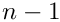 embedded in an  -dimensional Euclidean space, where
-dimensional Euclidean space, where  is two or three. We can always represent such a surface by a position vector from our chosen origin 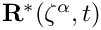, parametrised by time
is two or three. We can always represent such a surface by a position vector from our chosen origin 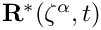, parametrised by time  and intrinsic (surface) coordinates 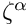, where the Greek index 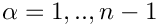.
and intrinsic (surface) coordinates 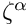, where the Greek index 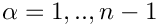.
Throughout this document we will use the summation convention that repeated Roman indices are to be summed over the range from 1 to and repeated Greek indices are to be summed over the range from 1 to . We will retain the summation signs for all other sums, such as sums over the nodes etc.
The covariant base vectors of the surface are defined to be the partial derivatives of the position vector with respect to the surface coordinates. For a two-dimensional surface,
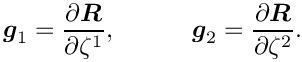
The covariant metric tensor of the surface is formed by taking the dot product of the covariant base vectors
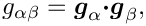
and the determinant of the covariant metric tensor is denoted by
![\[ g = g_{11}g_{22} - g_{12}g_{21}. \]](form_9.png)
The contravariant metric tensor is the inverse of the covariant metric tensor and is denoted by 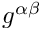. Thus,
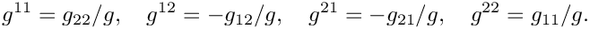
For a one-dimensional surface, there is a single covariant base vector that coincides with the tangent vector
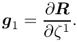
Here, the covariant metric tensor is simply the inner product of the tangent vector with itself 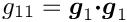 with determinant 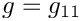 and the contravariant metric tensor is 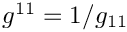.
We will need to integrate quantities over the surface, which uses the result that an infinitesimal unit of area is
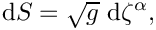
in terms of the intrinsic coordinates.

Differential Operators On A Surface
The formulation of transport equations within the surface requires the rates of change of surface quantities. The appropriate derivative is the surface gradient, often written as 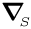 and defined unhelpfully in many papers and textbooks as the gradient operator restricted to the surface or
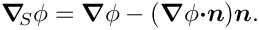
The problem with the above definition is that if a quantity is defined only on the surface it is impossible to take its gradient 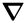.
A more helpful definition in terms of the intrinsic coordinates is that
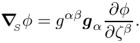
For a one dimensional surface parametrised by the arc-length, 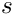, this reduces to 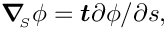 where  is a unit tangent vector to the surface. By definition the surface gradient is tangent to the surface and has no normal component.
is a unit tangent vector to the surface. By definition the surface gradient is tangent to the surface and has no normal component.
The surface divergence of an  -dimensional vector quantity defined on the surface is given by
-dimensional vector quantity defined on the surface is given by
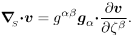
The divergence theorem applied over the surface (Aris, 1955) is
![\[ \int\!\!\!\int_{S} \mbox{\boldmath$\nabla$}_{\!\!_S} \mbox{\boldmath$\cdot v$}_{t}\,\mbox{ d}S = \int_{B} \mbox{\boldmath$v$}_{t} \mbox{\boldmath$\cdot m$}\,\mbox{d} l, \]](form_26.png)
where 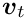 is a vector tangential to the surface; and  is the unit vector tangent to the surface, but perpendicular to the tangent of the bounding curve 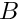, see the Figure above.
is the unit vector tangent to the surface, but perpendicular to the tangent of the bounding curve 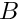, see the Figure above.
If a general vector is decomposed into normal and tangential components, 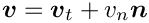, we can write
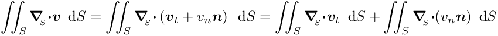
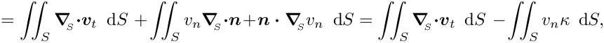
where 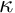 is twice the mean curvature of the surface and equal to minus the surface divergence of the normal. The term 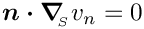 because the normal and surface divergence of any scalar quantity are orthogonal.
Hence using the divergence theorem on the first term on the right-hand side, we obtain
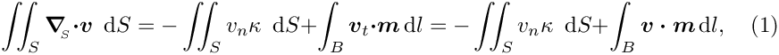
because the normal component of 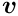 is perpendicular to and therefore contributes nothing to the line integral.
If we now choose 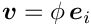, where 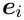 is the unit base vector in the  -th Cartesian coordinate direction, then we obtain
-th Cartesian coordinate direction, then we obtain
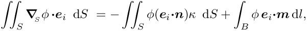
which is equivalent to the surface divergence theorem for a scalar field described by Wetherburn (1955; p 240, Eqn 26)
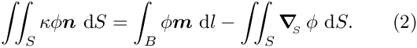
Free Surface and Interface Boundary Conditions
Dynamic condition

The presence of an interface with non-constant surface tension 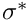 contributes to the overall force balance, as also described in another tutorial . The surface tension acts a line force bounding the interface and acting in the direction . Thus using the surface divergence theorem in the form (2),
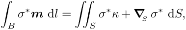
which gives the terms to be included in the force balance.
If we define the lower fluid in the sketch above to be fluid 1 and the upper fluid to be fluid 2. The traction exerted by fluid 1 onto fluid 2, 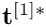 and that exerted by fluid 2 onto fluid 1, 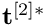. Then, balance of forces requires that
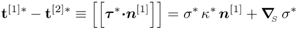
where we have been explicit about the fact that the curvature is dimensional and 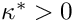 if the centre of curvature lies inside fluid 1.
After using the non-dimensionalisation described in another tutorial, the boundary condition becomes
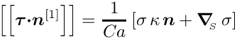
where 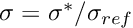 and 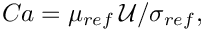 is the capillary number based on a reference viscosity and surface tension. This condition can be incorporated directly into the weak form of the momentum equations because the surface integral term in these equations, as described in another tutorial , is
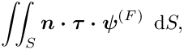
where 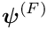 are the vector test functions associated with the momentum equations. Note that it is more compact to work with vector test functions rather than the Cartesian components of a vector test function in this case. The terms in the integral are exactly those on the left-hand side of the boundary condition multiplied by the test function. Hence, they become
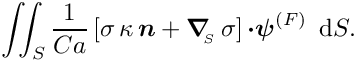
Early contributors computed these terms directly, but an undesirable feature is that computation of the curvature requires taking second derivatives of the position vector, which requires a higher degree of smoothness than previously demanded. We can use the surface divergence theorem again to weaken this requirement. Firstly we must use the product rule to bring the test function into the surface divergence
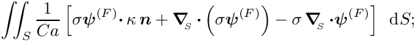
and then we can use the surface divergence theorem (1) on the first two terms to obtain
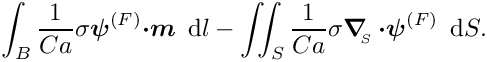
In index notation these terms become
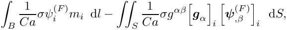
where 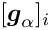 denotes the -th component of the covariant base vector 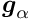 and represents the derivative . These are the terms that are implemented in oomph-lib's free surface elements. Note that variations in surface tension are taken into account in this formulation without the explicit need to take its surface derivative. An important observation is that the intrinsic surface coordinates can be chosen to be the local coordinates of each element so that we do not need to introduce another set of coordinates.
Kinematic condition
The kinematic condition is that "particles on the surface must remain on the surface". In other words the normal velocity of the surface must equal the normal rate of change of its position with time. The condition is compactly expressed in non-dimensional form as
where is the Strouhal number, see another tutorial for details. Note that, in general the velocity of the surface need not coincide with the velocity of the fluid.
Although this equation must be satisfied the details of how exactly it is implemented depend crucially on the mesh-update strategy chosen and we make use of the C++ features of inheritance and templating to avoid code duplication, see below for details.
Surface Transport Equations
Consider a chemical species with surface concentration that is only present on the surface. It can be transported within the moving surface by the standard mechanisms of advection and diffusion, but changes in the surface area can also induce changes in its concentration. The formulation of surface transport equations has been discussed many times in the literature and the main confusion surrounds how material derivatives are taken. Unlike the conventional bulk equations the surface does not occupy every point in the domain, so one cannot simply use the standard form of the material derivative.
Rather than covering the literature, here we shall simply state, ab initio , the governing equations formulated by Huang, Lai & Tseng as well as Cermelli et al (2005), who claim it was established by Slattery (1972). We shall demonstrate that it is equivalent to the form stated by Wong & Rumshitski and used by Campana et al (2004), but that it leads to a simpler formulation which avoids explicit calculation of the curvature (and hence second derivatives).
The dimensionless governing equations in weak form governing the transport of a scalar quantity  are
are
In the above equation the time derivative is taken at fixed `‘nodes’' in the finite element formulation and the ALE-like term compensates for tangential movement of these nodes along the surface. The normal movement is enforced to be exactly the same as the surface velocity by the kinematic condition. Note that the velocity in the third term of the governing equation is the full (bulk) fluid velocity. The dimensionless quantity is the surface Peclet number.
The formulation of Campana et al is found by decomposing the velocity in this term into normal and tangential components.
The surface gradient yields a vector that is tangential to the surface so that its inner product with the unit normal, is zero. Thus,
which is the starting point for Campana et al's derivation because the surface divergence of the normal may be replaced by the curvature, as described above.
Returning to our formulation we use the surface divergence theorem (1) to integrate the diffusion term and the product rule to handle the third term:
![\[ \int\!\!\!\int_{S} \left[ St \left(\frac{\partial \Gamma}{\partial t} - \dot{\mbox{\boldmath$R$}} \mbox{\boldmath$\cdot$} \mbox{\boldmath$\nabla$}_{\!\!_{S}} \Gamma \right) + \Gamma \mbox{\boldmath$\nabla$}_{\!\!_{S}} \mbox{\boldmath$\cdot$} \mbox{\boldmath$U$} + \mbox{\boldmath$U$} \mbox{\boldmath$\cdot$} \mbox{\boldmath$\nabla$}_{\!\!_{S}} \Gamma \right] \phi + \frac{1}{Pe_{s}} \mbox{\boldmath$\nabla$}_{\!\!_{S}} \Gamma \mbox{\boldmath$\cdot$} \mbox{\boldmath$\nabla$}_{\!\!_{S}} \phi\, \mbox{d}S - \int_{B} \frac{1}{Pe_{s}} \mbox{\boldmath$\nabla$}_{\!\!_{S}} \Gamma \mbox{\boldmath$\cdot m$}\, \phi \,\mbox{ d} l = 0,\]](form_71.png)
![\[ \Rightarrow \quad \int\!\!\!\int_{S} \left[ St\, \frac{\partial \Gamma}{\partial t} + (\mbox{\boldmath$U$} - St\, \dot{\mbox{\boldmath$R$}}) \mbox{\boldmath$\cdot$} \mbox{\boldmath$\nabla$}_{\!\!_{S}} \Gamma + \Gamma \mbox{\boldmath$\nabla$}_{\!\!_{S}} \mbox{\boldmath$\cdot$} \mbox{\boldmath$U$} \right] \phi + \frac{1}{Pe_{s}} \mbox{\boldmath$\nabla$}_{\!\!_{S}} \Gamma \mbox{\boldmath$\cdot$} \mbox{\boldmath$\nabla$}_{\!\!_{S}} \phi\, \mbox{d}S - \int_{B} \frac{1}{Pe_{s}} \mbox{\boldmath$\nabla$}_{\!\!_{S}} \Gamma \mbox{\boldmath$\cdot m$}\, \phi \,\mbox{ d} l = 0,\]](form_72.png)
The line term represents no-diffusive flux out of the system. In index notation the equations are
These are the equations implemented in oomph-lib using the definitions of surface derivatives given in Differential Operators On A Surface.
Implementation
We will now discuss how the discrete versions of the equations derived above are actually implemented in oomph-lib. The basic idea is that the equations should be implemented independently of the specific element type and mesh-update strategy and a base class oomph::FluidInterfaceElement defines the generic functionality for all fluid interface elements. The only difference between the different surface geometries are in the definitions of the surface derivative operators and these are defined in specific classes oomph::LineDerivatives (1D surface), oomph::AxisymmetricDerivatives and oomph::SurfaceDerivatives (2D surface). The final specific element is created by using a special templated class that determines the node-update strategy and takes the base class, derivative class and bulk element as template arguments.
The FluidInterfaceElement class
The template-free oomph::FluidInterfaceElement class provides storage and member functions that are common to all free-surface and interface elements. The most important functions to be aware of are:
- Storage and access functions for (pointers to) the capillary and Strouhal numbers.
- Storage for a (pointer to) an external pressure degree of freedom if the boundary is a free surface, rather than an interface.
- The virtual function specifies how the surface gradient operators are computed.double FluidInterfaceElement::compute_surface_derivatives(...)
- The function that returns the surface tension at the given local coordinate; default implementation returns 1.0.
- The function that is responsible for assembling the residual and jacobian contributions corresponding to the dynamic and kinematic boundary conditions.FluidInterfaceElement::fill_in_generic_residual_contribution_interface(..)
- The function which is called from within the integration loop and is used to assemble any additional surface transport equations or equations arising from different node update strategies. This function is virtual so that it can be overloaded in derived classes.FluidInterfaceElement::add_additional_residual_contributions_interface(...)
- The function that is used to specify the local equation number used for the kinematic condition, which depends on the mesh-update strategy chosen.virtual int FluidInterfaceElement::kinematic_local_eqn(...)
The LineDerivatives class
The class oomph::LineDerivatives implements the specific surface derivatives associated with a one-dimensional surface in a two-dimensional domain.The global coordinate system is Cartesian so its base vectors do not vary with the surface coordinates and ; and the contribution to each component of the momentum equation is found by setting the appropriate component for .
The AxisymmetricDerivatives class
The class oomph::AxisymmetricDerivatives implements the specific residuals associated with a two-dimensional surface in a three-dimensional domain, under the assumption of axisymmetry. Thus, the coordinate system is cylindrical polar , but it is assumed that there are no variations in the  direction.
direction.
It is worthwhile including the required mathematics here because the terms are not the same as in the LineDerivatives class. Specifically, if the surface coordinates are , the position vector to the surface is given by
where and . Hence,
In our standard formulation, the vector test function is given by
![\[ \mbox{\boldmath$\psi$}^{(F)} = \left(\begin{array}{c} \psi_{r}^{(F)}(s) \cos\theta \\ \psi_{r}^{(F)}(s) \sin\theta \\ \psi_{z}^{(F)}(s) \end{array} \right) \quad\Rightarrow\quad \mbox{\boldmath$\psi$}^{(F)}_{,1} = \left(\begin{array}{c} (\psi')_{r}^{(F)}(s) \cos\theta \\ (\psi')_{r}^{(F)}(s) \sin\theta \\ (\psi')_{z}^{(F)}(s) \end{array} \right) \quad\mbox{and}\quad \mbox{\boldmath$\psi$}^{(F)}_{,2} = \left(\begin{array}{c} -\psi_{r}^{(F)}(s) \sin\theta \\ \psi_{r}^{(F)}(s) \cos\theta \\ 0 \end{array} \right).\]](form_84.png)
Thus the contribution to the momentum equation (3) are
Two separate contributions are then derived from the cases and  . The difference from the
. The difference from the LineDerivatives is the final term that accounts for the azimuthal curvature. In addition, we must also multiply all terms by the additional factor of in the square-root of the determinant of the surface metric tensor.
The SurfaceDerivatives class
The class oomph::SurfaceDerivatives implements the specific residuals associated with a general two-dimensional surface in a three-dimensional domain. Once again, the global coordinate is Cartesian, so the contribution to each momentum equation is found by setting the two other components of the test function to be zero.
The SpineLine/Axi/SurfaceFluidInterfaceElement classes
We shall discuss the "line" version of the elements, but the others are essentially the same.
The class oomph::SpineLineFluidInterfaceElement is templated by the bulk element type, ELEMENT, and inherits from FluidInterfaceElement, LineDerivatives and Hijacked<SpineElement<FaceGeometry<ELEMENT> > >. The hijacking is only required for imposition of contact angle boundary conditions, see another tutorial for more details.
Note that the use of templates to make the code generic makes it hard to read. A simplified constructor is given below and simply builds the element based on the FaceGeometry of the bulk element and sets the indices associated with the bulk fluid velocity components from the bulk element.
If a spine method is used to update the nodal positions then the spine height is the unknown associated with the kinematic condition. Thus, the function kinematic_local_eqn(...) is overloaded accordingly
Finally, the element calculates the geometric contributions to the jacobian using the generic functionality in ElementWithMovingNodes
There are no additional contributions to the residuals or jacobian.
The ElasticLine/Axi/SurfaceFluidInterfaceElement classes
We shall discuss the "line" version of the elements, but the others are essentially the same.
The class oomph::ElasticLineFluidInterfaceElement is templated by the bulk element type, ELEMENT, and inherits from LineDerivatives, FluidInterfaceElement and Hijacked<FaceGeometry<ELEMENT> >. The hijacking is again only required for imposition of contact angle boundary conditions.
The "elastic" versions of the elements are more complicated than the "spine" versions because the kinematic condition is imposed using Lagrange multipliers, following the method described by Cairncross et al A finite element method for free surface flows of incompressible fluids in three dimensions. Part I. Boundary fitted mesh motion' (2000). These Lagrange multipliers must be added to the Nodes on the free surface and their introduction adds additional terms to the equations governing the bulk mesh motion.
The constructor is given below and in addition to building the element based on the FaceGeometry of the bulk element and setting the indices associated with the bulk fluid velocity components from the bulk element, it also adds the additional storage required for the Lagrange multipliers
The kinematic boundary condition is associated with the Lagrange multiplier and kinematic_local_eqn(...) is overloaded accordingly
The element calculates the geometric contributions to the jacobian using the generic functionality in SolidElements
The additional contributions to the residuals and jacobian arise from the Lagrange multiplier contributions to the equations that determine the position of the nodes. The essential loop is the contribution below which adds the normal traction to the governing equations of solid mechanics:
The SurfaceDerivatives class
The recommended strategy for implementing surface transport equations is to inherit from the appropriate FluidInterfaceElement, and include the equations independently of the mesh-update strategy by overloading the function
The mesh-update specialisations can be added by further specialisation as required. Alternatively, one could simply inherit directly from the specialised element. This is the approach taken in this example code.
An important point is that the axisymmetric formulation of the surface divergence of a vector is not entirely trivial, as discussed in The AxisymmetricDerivatives class. In the context of surface transport the term that is always present is . Using the same surface coordinates as above, , the velocity vector is
Thus, the surface divergence term is
which is exactly the same form as the surface divergence of the vector test function derived in the section The AxisymmetricDerivatives class, as expected.
PDF file
A pdf version of this document is available.